Kit
Shirts, a jacket, a cap, a tote, a mug and a sticker, all in black with the Fulfen Labs lockup: the harness mark and the name. Printed or stitched to order in the UK.
Not on sale yet. This page shows the range and what each piece would cost. Prices are indicative, include VAT and leave out delivery. Nothing can be ordered here.
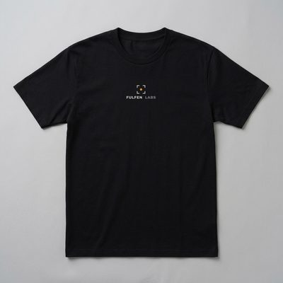
Printed
T-shirt
Organic cotton, black, with the vertical Fulfen Labs logo printed 10 cm wide on the chest.
£15indicative
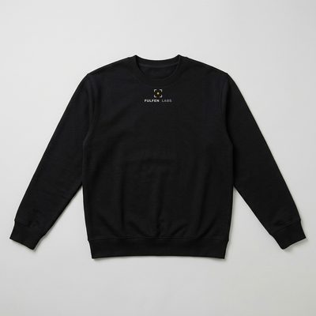
Printed
Sweatshirt
Crew neck, black, with the vertical logo printed 10 cm wide on the chest.
£21indicative
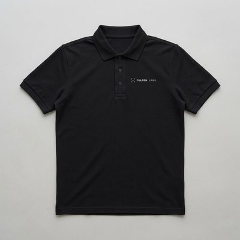
Printed
Polo shirt
Organic piqué, black, with the horizontal logo printed 10 cm wide on the left chest.
price to confirm
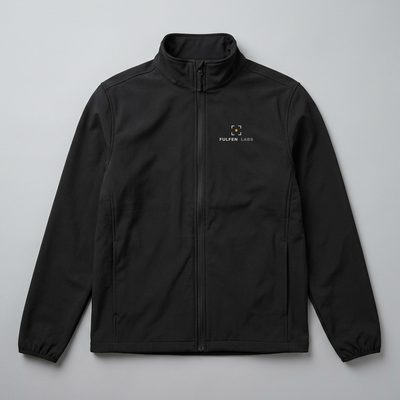
Embroidered
Softshell jacket
Black softshell with a full zip and the vertical logo stitched 8.5 cm wide on the left chest.
£35indicative
Embroidered
Cap
Six-panel cap, black, with the vertical logo stitched 8.5 cm wide on the front, above the brim.
£17indicative
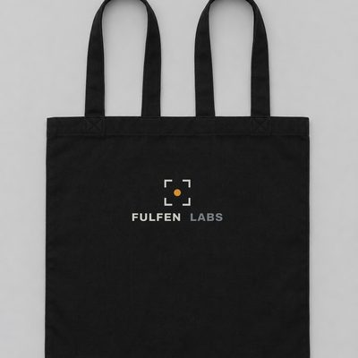
Printed
Tote bag
Black cotton bag for life with long handles and the vertical logo printed 13 cm wide.
£8indicative
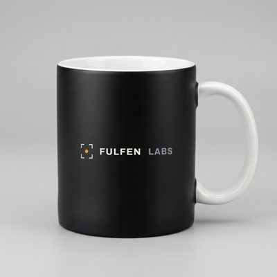
Printed all round
Mug
An 11 oz ceramic mug printed ink black all round, with the horizontal logo on one side. White handle and rim.
£6indicative
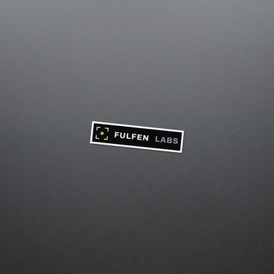
Vinyl
Sticker
The horizontal logo on its own ink strip, about 10 by 2 cm, die cut with a white edge.
£4indicative
Variants (trial)
Ideas being tried beside the range: a back print, a sleeve mark, a larger cap logo and black-on-black stitching.
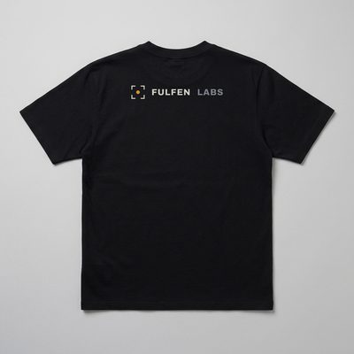
Printed front and back
T-shirt, front and back
The T-shirt with the horizontal logo also printed 25 cm wide across the upper back.
price to confirm
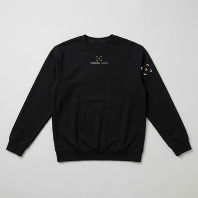
Printed and embroidered
Sweatshirt with sleeve mark
The sweatshirt with the harness mark alone stitched 5 cm wide on the left sleeve.
price to confirm
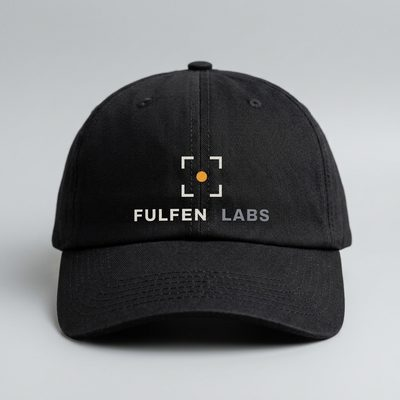
Embroidered
Cap, larger logo
The cap with the vertical logo stitched 9.1 cm wide.
£17indicative
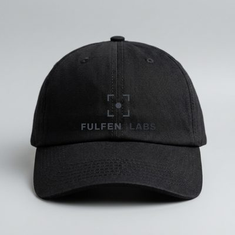
Embroidered
Tonal cap
The cap with the logo stitched black on black, in charcoal and dark grey thread, no amber.
£17indicative
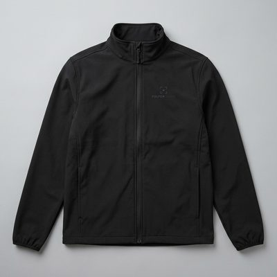
Embroidered
Tonal jacket
The softshell jacket with the logo stitched black on black, in charcoal and dark grey thread, no amber.
£35indicative
The products are drawn by an image model; the logo on each is the real artwork, laid on at the size it would be printed or stitched.